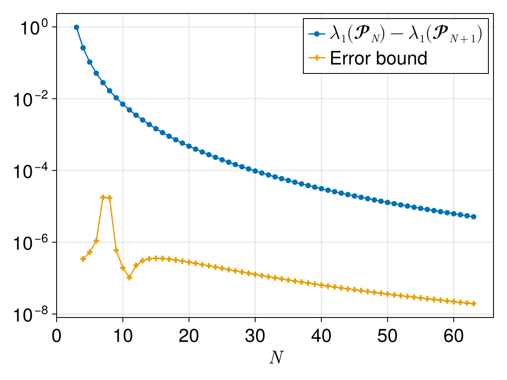

Week 3 Lecture 1: Computer-assisted proofs for continuous problems
Last week we looked at some examples of computer-assisted proofs for discrete problems, this included
- The four color theorem
- The boolean Pythagorean triples problem
- Goldbach's weak conjecture
This week we will look at computer-assisted proofs applied to continuous problems. Since computers are inherently discrete machines, working with continuous problems requires a slightly different approach.
Computer-assisted proofs are not applicable to all types of problems. Throughout the course we will talk about what type of problems are good candidates for computer-assisted proofs and by the end of the course my hope is that you will have at least a rough idea for when a computer-assisted proof could be applied to a problem. I have three guiding principles as to which problems are good candidates for computer-assisted proofs. For a computer-assisted proof to be applicable to a problem the result should be:
- Numerically obvious
- Stable under perturbations
- On a compact domain
Expanding a bit on these points:
- Rigorous numerical methods will never give you better results than classical non-rigorous methods. If you cannot produce very convincing numerical evidence that the result is true, then any attempt to rigorously prove it is doomed to fail.
- Numerical methods will always produce approximations. Rigorous numerical methods can give you bounds for the errors of these approximations, but cannot eliminate them. When setting up the problem there is however usually a lot of freedom in what type of perturbations the result should be stable under.
- In the end the result needs to reduce to a finite computation and that requires some sort of compactness. If you have an infinite domain it is in many cases possible to compactify it, usually at the cost of introducing singularities at the boundaries that need to be dealt with.
The example we will look at in this lecture is from a recent paper from my own research and is related to the field of spectral geometry. We will look at what spectral geometry is, the problem the paper handles and how it relates to the guiding principles mentioned above. The paper in question is:
Two other papers that make use of similar methods, and which we might look more at later in the course, are:
- Computation of Tight Enclosures for Laplacian Eigenvalues (code)
- A counterexample to Payne’s nodal line conjecture with few holes (code)
Spectral geometry
In spectral geometry one studies how the eigenvalues and eigenfunctions of the Laplacian depend on the domain. In our case we are interested in problems of the form
\[\begin{cases} -\Delta u = \lambda u &\text{in}\quad \Omega\\ u = 0 &\text{on}\quad \partial\Omega \end{cases}.\]
Here $-\Delta u = \lambda u$ means that $u$ is an eigenfunction of the Laplacian, with associated eigenvalue $\lambda$. Recall that in the plane, $\Delta$ is just the sum of the second derivatives
\[\Delta u = \frac{\partial^2 u}{\partial x^2} + \frac{\partial^2 u}{\partial y^2}.\]
The eigenvalue equation is then combined with a boundary condition, in this case $u = 0$ on the boundary of $\Omega$. One can consider other types of boundary conditions, but for our purposes here we will stay with $u = 0$, corresponding to a zero Dirichlet boundary condition.
If $\Omega$ is reasonably well behaved there is a countable sequence of eigenvalues, $\lambda_1 < \lambda_2 \leq \lambda_3 \leq \dots$, all with an associated eigenfunction $u_k$. In spectral geometry we are interested in how these eigenvalues and eigenfunctions depend on the domain $\Omega$.
Monotonicity of the first Dirichlet eigenvalue of regular polygons
In this case we consider domains $\mathbb{P}_N$ which are regular polygons and we are interested in how the first eigenvalue of these polygons, $\lambda_1(\mathbb{P}_N)$ depend on $N$. For our purposes we want to normalize the polygons so that they have area $\pi$.
If we plot $\lambda_1(\mathbb{P}_N)$ as a function of $N$ we have the following picture

From this picture one could maybe conjecture that the eigenvalues are decreasing with $N$. This picture is however maybe not the most convincing, we only go up to $N = 64$ and for the larger values the graph mostly looks flat in this plot. To get a slightly better figure let us start by noting that as $N$ goes to infinity we would have that the polygons approach the unit circle. For the unit circle the eigenvalue can be explicitly computed; it's the first root of the Bessel function $J_0$. If we plot the difference between $\lambda(\mathbb{P}_N)$ and this value and give the y-axis a logarithmic scale we get (ignore the error bound for now, we will get back to that).

This is pretty strong numerical evidence that eigenvalues are monotone, at least up to $N = 64$. Of course, a lot of the details are in how these values are actually computed. There are approximations errors in these values, can we trust that they are small enough not to change the conclusion?
Let us consider this problem in terms of the above discussed guidelines for computer-assisted proofs. Let us start with considering the project only for the finite set $N = 3, 4, \dots, 64$.
- Numerically obvious: The above figure gives fairly convincing numerical results.
- Stable under perturbations: If we perturb the eigenvalues slightly the monotonicity should still hold.
- On a compact domain: When restricted to $N = 3, 4, \dots, 64$ the domain is clearly compact.
This indicates that a computer-assisted proof might be viable. Of course, for a complete result we need to also handle all $N \geq 64$. How can we achieve that? The rough idea is to see the eigenfunctions not as a function of $N$, but as a function of $\eta = \frac{1}{N}$. We then have to prove monotonicity of the eigenvalues for all $\eta \in [0, 1/64]$. This gives a compact domain, at the cost of very singular behavior at $\eta = 0$.
Handling $N = 3, 4, \dots, 64$
Let us focus on the finite case of proving that $\lambda(\mathbb{P}_N)$ for $N = 3, 4, \dots, 64$. Handling the infinite limit builds on some of the same ideas, but requires significantly more work.
The question to ask is, how were the approximate eigenvalues in the figures above computed? There are many different ways of numerically computing eigenvalues, some of them more suited for rigorous verification.
In this case the computations were done using the Method of Particular Solutions, see the paper Reviving the Method of Particular Solutions for a more thorough overview of the method. Recall that we are trying to solve the equation
\[\begin{cases} -\Delta u = \lambda u &\text{in}\quad \Omega\\ u = 0 &\text{on}\quad \partial\Omega \end{cases}.\]
The idea is to approximate $u$ using a linear combination of basis functions,
\[u_{app}(x, y) = \sum_{i = 1}^{M} c_i \phi_i(x, y).\]
How should the basis functions $\phi_i$ and the coefficients $c_i$ be chosen? The basis functions we choose so that they satisfy the equation $-\Delta\phi_{i} = \lambda_{app}\phi_{i}$ exactly for the approximate eigenvalue $\lambda_{app}$, but they will not satisfy any specific boundary condition. We then choose the coefficients $c_i$ as to make the resulting linear combination as close on the boundary as possible. This gives us an approximation $u_{app}$, $\lambda_{app}$ with
\[\begin{cases} -\Delta u_{app} = \lambda_{app} u_{app} &\text{in}\quad \Omega\\ u_{app} \approx 0 &\text{on}\quad \partial\Omega \end{cases}.\]
The precise choice of $\phi_i$ depends highly on the domain and we won't go into the details here. For this specific case the approximation used is
\[u_{app}(x, y) = J_{0}\left(r\sqrt{\lambda}\right) + a_{2}J_{N}\left(r\sqrt{\lambda}\right)\cos N\theta + \sum_{n = 1}^{N} \left( b_{1}J_{\alpha}\left(r_{n}\sqrt{\lambda}\right)\sin \alpha\theta_{n} + b_{2}J_{2\alpha}\left(r_{n}\sqrt{\lambda}\right)\sin 2\alpha\theta_{n} \right).\]
Here $\alpha = \pi / N$, $r$ is the distance from $(x, y)$ to the center of the domain, and $(r_{n}, \theta_{n})$ are the polar coordinates of the point $(x, y)$ when centered around vertex $n$ and the orientation taken so that $\theta_{n} = 0$ corresponds to the boundary segment between vertex $n$ and $n + 1$.
So far there is nothing in this approach which is related to rigorous numerics. This is just a classical numerical approach which we can use to compute approximations of eigenvalues and eigenfunctions. What makes this approach suitable for a computer-assisted proof is the following theorem by Fox, Henrici and Moler.
Let $\Omega\subset\mathbb{R}^n$ be bounded. Let $\lambda_{app}$ and $u_{app}$ be an approximate eigenvalue and eigenfunction–-that is, they satisfy $\Delta u_{app}+\lambda_{app} u_{app}=0$ in $\Omega$ but not necessarily $u_{app} = 0$ on~$\partial\Omega$. Define
\[ \mu = \frac{\sqrt{|\Omega|}\sup_{x \in \partial \Omega}|u_{app}(x)|}{\|u_{app}\|_2}.\]
where $|\Omega|$ is the area of the domain. Then there exists an eigenvalue $\lambda$ such that
\[ \frac{|\lambda_{app} - \lambda|}{\lambda} \leq \mu.\]
The value $\mu$ measures how close to zero the approximate eigenfunction is on the boundary. If $\mu$ is very small, meaning that the approximate eigenfunction is very close to zero on the boundary, then the theorem guarantees us that there is a true eigenvalue $\lambda$ close to our approximate eigenvalue $\lambda_{app}$.
If we can find a bound for $\mu$, which only requires us to bound an explicit function on an explicit domain, we can then get upper bounds for the error in our approximations of the eigenvalues. If these upper bounds are sufficiently small we can still verify the monotonicity of the eigenvalues! The approach for bounding $\mu$ is something we will talk more about later in the course.
The proof for the monotonicity then follows from the following figure. It shows the difference $\lambda_1(\mathbb{P}_N) - \lambda_1(\mathbb{P}_{N + 1})$ for the approximate eigenvalues. For the eigenvalues to be monotone this difference must be positive. It also shows the error for each point, coming from the sum of the error for the two eigenvalues. Since the error is smaller than the value, the difference must be positive also for the true eigenvalues.
